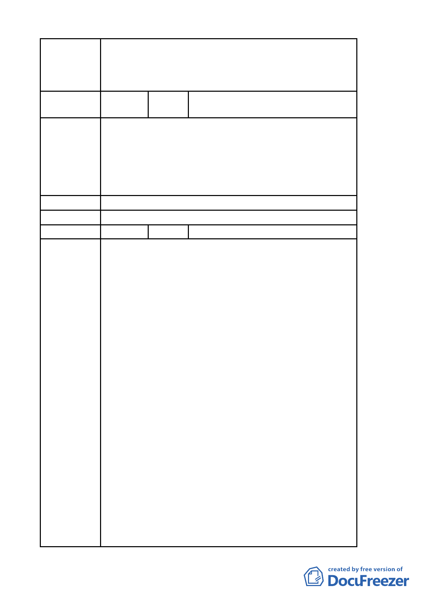

規定辦理，不得作住宅之使用。
二、有關臺北好好看申請案之建築物高度管制部分，經委
員會決議採不記名投票方式表決結果為「建築高度 70
公尺（上限）、視覺廊道 40 公尺（下限）」。
編
號
3
陳情人
吳議長碧珠 99.4.9 依陳情人之意見
轉述
一、「促進都市再生 2010 年臺北好好看」申請案所要求 99
陳情理由
年 3 月前必須取得建築執照及 99 年 9 月前必須開工等
時程管制，市府應詳細檢討內部行政整合協調時間，
於扣除不可歸責於申請人部分之時程後予以延長。
二、全案應秉持市府推案之美意，朝專案變更方式儘速完
成各階段之審議作業。
建 議 辦 法 （同上）
委 員 會 決 議 所提建議業已錄案供委員審議參考。
編 號 4 陳情人 奇泰建設有限公司等 4 家
一、「金泰段臺北好好看開發案」幾經折衝，已悉依台北
市政府都市發展局 (以下簡稱「都發局」)98 年 10 月
30 日北市都規字第 09836521507 號函規定表訂規範
內容、格式，於民國 98 年 11 月 3 日送請台北市都市
計畫委員會(以下簡稱「都委會」) 辦理公展在案、俟
後獲台北市政府府都規字第 09838862600 號函於 98
年 12 月 23 日至 99 年 1 月 22 日公展完成。
二、據「都委會」民國 99 年 3 月 22 日第 609 次都市計畫
委員會審議，會議結論稱：由市府都委會委員組成專
案小組續審，併案檢討「金泰段臺北好好看開發案」、
陳情理由
臺北市「基隆河 (中山橋至成美橋段) 附近地區土地
使用分區與都市設計管制要點」( 北段地區〉計畫案
(下稱「大灣北段通檢計畫」) 使得進行實質審查作
業；惟「金泰段臺北好好看開發案」自民國 97 年 10
月迄今歷經年餘反覆研擬、檢討獲致共識後，始依「都
發局」表訂版本送件審查，今如須併「大灣北段通檢
計畫」始得實質審查，不免令陳情人等憂慮：
(一)「大灣北段通檢計畫」進程繁複，其結論又將牽動「金
泰段臺北好好看開發案」內容，如此一來，歷經年餘
之討論折衝豈非俱付東流？送審時程又恐將遙遙無
期。
(二)「促進都市再生2010年臺北好好看」開發計畫案尚有
領取建築執照及開工時程限制，如依是項併案檢討結
論執行，勢必無法符合上揭時程限制，衍生之損失將
- 52 -